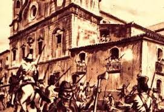
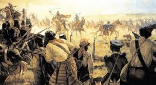

Sobre
A Cabanagem foi uma revolta social ocorrida na província do Grão-Pará, no Brasil, entre 1835 e 1840, durante o período regencial, caracterizado por instabilidade política e conflitos regionais. Esse movimento foi liderado principalmente por setores populares como indígenas, mestiços, caboclos (moradores das cabanas, ou "cabanos", de onde vem o nome do movimento) e negros, que viviam em condições de extrema pobreza e exploração.
Consequências
A Cabanagem deixou um legado de resistência popular e questionamento da ordem social vigente no Brasil do século XIX. Embora tenha fracassado, a revolta expôs a fragilidade do governo regencial e a insatisfação das províncias distantes do centro de poder, influenciando outros movimentos sociais e políticos no país. A revolta é um exemplo da luta dos povos amazônicos por autonomia e melhores condições de vida, e é um episódio histórico significativo para a compreensão das desigualdades regionais e sociais no Brasil.
